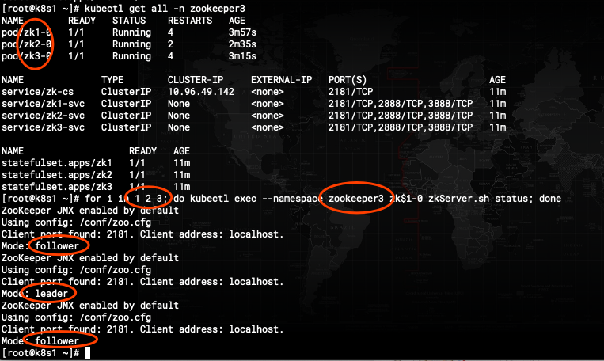

说明
- 本次群集使用statfulset部署三节点集群
安装
1
2
3
4
5
| [root@k8s1 ~]# docker search zookeeper
NAME DESCRIPTION STARS OFFICIAL AUTOMATED
zookeeper Apache ZooKeeper is an open-source server wh…
# 使用的官方镜像,上传至harhub后使用,官方镜像的zk版本是最新的
|
下面的yaml文件,使用前先创建namespace
1
2
3
4
5
6
7
8
9
10
11
12
13
14
15
16
17
18
19
20
21
22
23
24
25
26
27
28
29
30
31
32
33
34
35
36
37
38
39
40
41
42
43
44
45
46
47
48
49
50
51
52
53
54
55
56
57
58
59
60
61
62
63
64
65
66
67
68
69
70
71
72
73
74
75
76
77
78
79
80
81
82
83
84
85
86
87
88
89
90
91
92
93
94
95
96
97
98
99
100
101
102
103
104
105
106
107
108
109
110
111
112
113
114
115
116
117
118
119
120
121
122
123
124
125
126
127
128
129
130
131
132
133
134
135
136
137
138
139
140
141
142
143
144
145
146
147
148
149
150
151
152
153
154
155
156
157
158
159
160
161
162
163
164
165
166
167
168
169
170
171
172
173
174
175
176
177
178
179
180
181
182
183
184
185
186
187
188
189
190
191
192
193
194
195
196
197
198
199
200
201
202
203
204
205
206
207
208
209
210
211
212
213
214
215
216
217
218
219
220
221
222
223
224
225
226
227
228
229
230
231
232
233
234
235
236
237
238
239
240
241
242
243
244
245
246
247
248
|
apiVersion: v1
kind: Service
metadata:
labels:
app: zk1
name: zk1-svc
namespace: zookeeper
spec:
clusterIP: None
ports:
- port: 2181
protocol: TCP
targetPort: 2181
name: client
- port: 2888
protocol: TCP
targetPort: 2888
name: leader
- port: 3888
protocol: TCP
targetPort: 3888
name: leader-election
selector:
app: zk1
sessionAffinity: None
type: ClusterIP
---
apiVersion: v1
kind: Service
metadata:
labels:
app: zk2
name: zk2-svc
namespace: zookeeper
spec:
clusterIP: None
ports:
- port: 2181
protocol: TCP
targetPort: 2181
name: client
- port: 2888
protocol: TCP
targetPort: 2888
name: leader
- port: 3888
protocol: TCP
targetPort: 3888
name: leader-election
selector:
app: zk2
sessionAffinity: None
type: ClusterIP
---
apiVersion: v1
kind: Service
metadata:
labels:
app: zk3
name: zk3-svc
namespace: zookeeper
spec:
clusterIP: None
ports:
- port: 2181
protocol: TCP
targetPort: 2181
name: client
- port: 2888
protocol: TCP
targetPort: 2888
name: leader
- port: 3888
protocol: TCP
targetPort: 3888
name: leader-election
selector:
app: zk3
sessionAffinity: None
type: ClusterIP
---
apiVersion: v1
kind: Service
metadata:
name: zk-cs
namespace: zookeeper
labels:
app: zk
spec:
ports:
- port: 2181
name: client
selector:
appp: zoo
---
apiVersion: apps/v1
kind: StatefulSet
metadata:
name: zk1
namespace: zookeeper
spec:
selector:
matchLabels:
app: zk1
serviceName: zk1-svc
replicas: 1
template:
metadata:
labels:
app: zk1
appp: zoo
spec:
containers:
- name: kubernetes-zookeeper
imagePullPolicy: Always
image: "172.16.130.72/basis/zookeeper"
ports:
- containerPort: 2181
name: client
- containerPort: 2888
name: server
- containerPort: 3888
name: leader-election
env:
- name: ZOO_MY_ID
value: "1"
- name: ZOO_SERVERS
value: server.1=zk1-svc:2888:3888;2181 server.2=zk2-svc:2888:3888;2181 server.3=zk3-svc:2888:3888;2181
- name: ZOO_INIT_LIMIT
value: "10"
- name: ZOO_SYNC_LIMIT
value: "5"
volumeMounts:
- name: datadir
mountPath: /data
volumeClaimTemplates:
- metadata:
name: datadir
spec:
volumeMode: Filesystem
storageClassName: nfs
accessModes: [ "ReadWriteMany" ]
resources:
requests:
storage: 2G
---
apiVersion: apps/v1
kind: StatefulSet
metadata:
name: zk2
namespace: zookeeper
spec:
selector:
matchLabels:
app: zk2
serviceName: zk2-svc
replicas: 1
template:
metadata:
labels:
app: zk2
appp: zoo
spec:
containers:
- name: kubernetes-zookeeper
imagePullPolicy: Always
image: "172.16.130.72/basis/zookeeper"
ports:
- containerPort: 2181
name: client
- containerPort: 2888
name: server
- containerPort: 3888
name: leader-election
env:
- name: ZOO_MY_ID
value: "2"
- name: ZOO_SERVERS
value: server.1=zk1-svc:2888:3888;2181 server.2=zk2-svc:2888:3888;2181 server.3=zk3-svc:2888:3888;2181
- name: ZOO_INIT_LIMIT
value: "10"
- name: ZOO_SYNC_LIMIT
value: "5"
volumeMounts:
- name: datadir
mountPath: /data
volumeClaimTemplates:
- metadata:
name: datadir
spec:
volumeMode: Filesystem
storageClassName: nfs
accessModes: [ "ReadWriteMany" ]
resources:
requests:
storage: 2G
---
apiVersion: apps/v1
kind: StatefulSet
metadata:
name: zk3
namespace: zookeeper
spec:
selector:
matchLabels:
app: zk3
serviceName: zk3-svc
replicas: 1
template:
metadata:
labels:
app: zk3
appp: zoo
spec:
containers:
- name: kubernetes-zookeeper
imagePullPolicy: Always
image: "172.16.130.72/basis/zookeeper"
ports:
- containerPort: 2181
name: client
- containerPort: 2888
name: server
- containerPort: 3888
name: leader-election
env:
- name: ZOO_MY_ID
value: "3"
- name: ZOO_SERVERS
value: server.1=zk1-svc:2888:3888;2181 server.2=zk2-svc:2888:3888;2181 server.3=zk3-svc:2888:3888;2181
- name: ZOO_INIT_LIMIT
value: "10"
- name: ZOO_SYNC_LIMIT
value: "5"
volumeMounts:
- name: datadir
mountPath: /data
volumeClaimTemplates:
- metadata:
name: datadir
spec:
volumeMode: Filesystem
storageClassName: nfs
accessModes: [ "ReadWriteMany" ]
resources:
requests:
storage: 2G
|
使用
1
2
| # 验证 群集是三节点的,一主两从,如下图说明正常
for i in 1 2 3; do kubectl exec --namespace zookeeper3 zk$i-0 zkServer.sh status; done
|

群集初始化可能有点问题,pod会反复重启,这时候需要手动删除一下pod,随便删,知道所有pod都runing,并且不再重启,群集初次选举成功后,再删除任意节点都不会影响群集可用性,可以手动删除进行测试.
1
| service/zk-cs 就是群集的群集IP服务,端口是2181
|
1
2
3
4
5
6
7
8
9
| # 随便进入一个zk pod
kubectl exec -it -n zookeeper3 zk1-0 /bin/bash
root@zk1-0:/apache-zookeeper-3.5.6-bin# zkCli.sh
[zk: localhost:2181(CONNECTED) 0]connect 10.96.49.142:2181 #连接群集
[zk: zk-cs:2181(CONNECTED) 1]connect zk-cs:2181 # 使用service的dns名称也可以
# 连接成功后如下
[zk: 10.96.49.142:2181(CONNECTED) 1]create /test 1 # 测试创建一个zone
[zk: 10.96.49.142:2181(CONNECTED) 2] get /test # 测试取刚才创建的zone
1
|